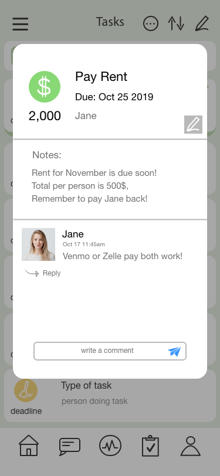

Mynest: Mobile App
Mynest
"Where home is at your fingertips"
Roommates needed an efficient way to distribute tasks and streamline communication in order to lessen conflict and save time.
The purpose of Mynest is to provide the college/student demographic with an easy and quick way to organize the process of living together.
I had chosen this project direction in response to a class design prompt in "making the lives of roommates easier".
Personas
1. college roommate, graduate roommates (young working class)
2. Short term (few weeks)(travel, camps)
3. Family
I deduced that the primary audience are college and graduate roommates or students and the
working class.
The age demographic is catered towards young adults and is meant for long term usage between strangers or friends (at least a few months).
Our secondary audience includes short term roommates (together for a few weeks/months). Whether it be for work, travel purposes or seasonal camps, users of any age that need an organizational tool to coordinate with strangers or friends may turn to Mynest.
Process
I created an empathy map for my primary persona, and started to lay out the structure of the interface, using key actions I wanted to include.

Key Features
Activity: This is the homepage/default screen of the app. It provides a simple overview of upcoming tasks, events, and a log of all recent activity.
Tasks: The task page lists all upcoming/unfinished tasks with most pressing tasks at the top. There is also an option to pin important tasks and have them stay at the top until completion/deletion. At the top is also a shortcut to the user’s personal tasks– divided by incomplete and completed tasks and sorted chronologically. At the top is also a directory to completed tasks. By swiping on a specific task, there are options to mark as done, delete, edit, and nude (to remind the assigned person to do their task).
People: This page displays all the roommates that have been added to your household. It also displays their current amount of points, and if they have invited any guests over. Clicking on a user’s picture/name will take you to their page where you can see their contact info, the tasks assigned to them, and tasks they have completed.
Calendar: This page displays a calendar with all tasks marked with a circle: completed task are marked green, and upcoming tasks marked grey. There are also small orange dots which indicate a household event like a meeting or potluck. At the top is a signifier showing how many upcoming events there are within the month. Clicking on a specific day displays information at the bottom detailing the type of task/event.
Messageboard: The messageboard is a basic chat room that allows users to communicate within the app– this allows them to keep all living based conversations local. There is also an option to attach photos/files.
Safety: The “Who’s Home” section is a fairly unique feature that allows users to share their location when coming home- which can be automatically shut off when they arrive home, or manually adjusted. The house icon will be fully filled with green depending on what fraction of the roommates are present. The “home” status can also be toggled in the side vertical navigation.
Wireframes
